2.3 Esquema de generación.
Un esquema de generación es una extensión de una gramática libre de contexto que incorpora acciones semánticas destinadas a producir código intermedio o final durante el análisis sintáctico de un compilador.
Estas acciones se insertan como bloques de código (normalmente entre llaves { }) dentro de las producciones gramaticales.
Estructura general:
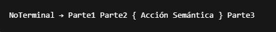
- Las acciones semánticas se ejecutan cuando la producción es reconocida.
- Se colocan para definir cuándo se genera cierto código intermedio o resultado computacional.
- Se utilizan en analizadores sintácticos dirigidos por la sintaxis (LL o LR).
2.3.1 variables y constantes:
Variables:
- Representan posiciones de memoria que pueden cambiar durante la ejecución.
- En esquemas de generación, se traducen en instrucciones para reservar espacio, cargar valores o guardar resultados.
Ejemplo
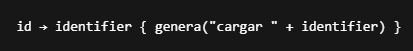
Constantes:
- Son valores fijos definidos explícitamente (ej. 5, 'a', true).
- Se traducen en instrucciones de carga inmediata o uso directo.
Ejemplo
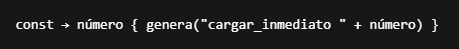
2.3.2 Expresiones
- Instrucciones que realizan operaciones aritméticas, lógicas o relacionales.
- Se traducen evaluando operandos y aplicando la operación correspondiente.
Ejemplo
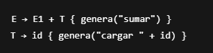
- El código generado podría ser:
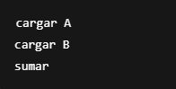
2.3.3 Instrucción de Asignación
- Instrucciones donde se asigna el resultado de una expresión a una variable.
Ejemplo
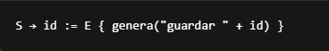
Traducción típica
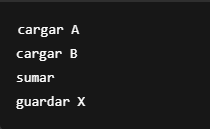
Esto representa: X = A + B
2.3.4 Instrucciones de Control
- Instrucciones condicionales o repetitivas: if, while, for, etc.
- Se requiere generar saltos condicionales e instrucciones de flujo.
Ejemplo
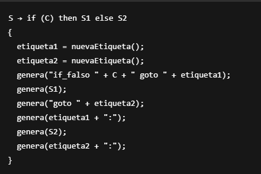
2.3.5 Funciones
- Son bloques de código reutilizables.
- En esquemas de generación, implican:(Definición (entrada), Llamada y Retorno de valor)
Ejemplo
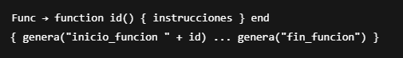
Llamada
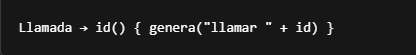
2.3.6 Estructuras
- Agrupan múltiples variables (como registros o structs).
- La generación de código considera el acceso a campos internos.
Ejemplo
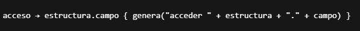
En memoria, las estructuras suelen representarse con desplazamientos.
← Volver al índice